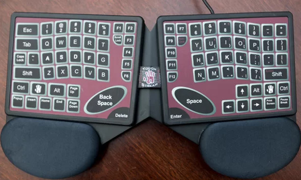
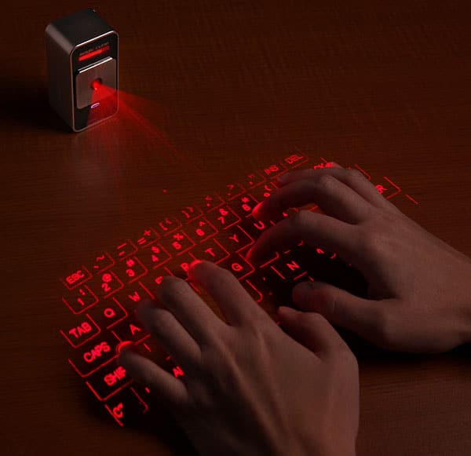
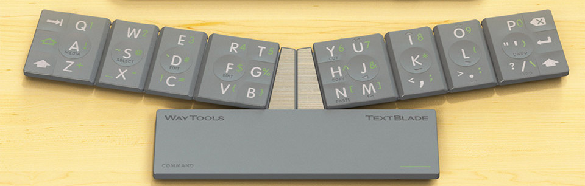
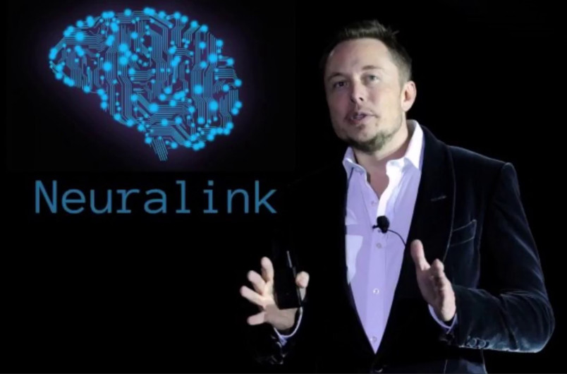

Lightening the Burden of the World's Numberless Tasks
- Herkimer County Historical Society History Account
FingerWorks
In 2005, Apple purchased FingerWorks who manufactured and designed the technology for the Touchstream keyboard. The keyboard used a special multitouch capacitive sensing technology. This tech was later used in the iPhones of the future. Without FingerWorks, Apple might not be where they are today. They would have learned how to make similar technology, but it would have taken longer and wouldn't have been nearly as good. When you can't beat them, join them, right?
Laser Keyboard
The laser keyboard has been thought of by almost anyone who has used a keyboard. It's half virtual and half physical. There is something special about not having to physically press down onto keys to input data. This technology is no where close to being viable today in 2019, but as technology advances with lasers, there is a chance that we may see improvements. One day we might have laser keyboards that can feel instead of passing your fingers next to lights on a table.
Textblade
By far, Waytools has made one of the most innovative and usable keyboard to date. It uses the standard QWERTY layout and proprietary technology to allow it to be tiny. Some would say this is the future of keyboards. The Textblade uses an ortholinear layout rather than the traditional staggered layout and looks like an improvement. Like other non-traditional keyboards, the textblade will have to compete with the normal keyboard and now phones in order to come up on top.
Neuralink
"An integrated brain-machine interface platform with thousands of channels" - Elon Musk. Neuralink is the future of technology, the closest thing to Black Mirror technology. Neualink will allow it's users to connect their brain to a computer and that computer will be able to be used with other computers. This might use a keyboard in some kind of sense, although it would be harder to define the "layout" that it would be using. This computer and technology would be the end of the need for keyboards. There may be a future where we don't need an input device to speak with computers because the computers might even talk back to us. It's a crazy future, but the need for keyboards will always be there. We'll just have to see what it takes to end it's life. There is much to be learned about this future technology and they plan to begin human testing as soon as the end of 2020.